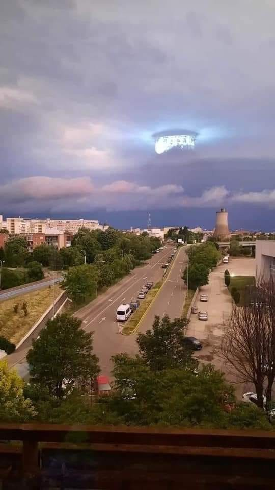

2022-02 2022-03

La photo de reflet d'une lampe dans un appartement d'Arad (Roumanie) , qui
sera présentée comme inexpliquée par Luis Elizondo en 2024-10 .
2022-05
2022-06 2022-07 2022-08 2022-10 2022-11 2022-12 2022 En Irak , un opérateur militaire américain signale des PANs flying sporadically within the target area entre 130 et 290 km/h, d'une taille estimée à 1 ou 2 m, d'altitude indéterminable. Deux images infrarouges montrent chacune deux zones de contraste, dont une allongée suivie d'une traînée que l'AARO DOW-UAP-D106, Mission Report, Iraq, 2022 , PURSUE 2026-09-18 DOW-UAP-PR130, Unresolved UAP Report, Iraq, 2022 , PURSUE 2026-09-18 DOW-UAP-PR131, Unresolved UAP Report, Iraq, 2022 , PURSUE 2026-09-18 2022 Au Moyen-Orient (rapport titré « Irak »), deux vidéos infrarouges et électro-optiques militaires américaines (1 min 47 et 2 min 36) suivent une zone de contraste qui entre et sort du champ, une seconde apparaissant brièvement. Le portail résume le rapport de mission associé de deux façons différentes (six petites sphères groupées, agiles et changeant souvent de direction, à 770 km/h, ou un objet entre 130 et 290 km/h) DOW-UAP-D109, Mission Report, Middle East, 2022 , PURSUE 2026-09-18 DOW-UAP-PR140, Unresolved UAP Report, Middle East, 2022 , PURSUE 2026-09-18 DOW-UAP-PR141, Unresolved UAP Report, Middle East, 2022 , PURSUE 2026-09-18 2022 Dans la zone du NORTHCOM (Amérique du Nord ), le capteur infrarouge d'un F/A-18 suit une zone de contraste pendant une trentaine de secondes, la verrouille puis perd la piste DOW-UAP-PR069, "F/A-18 FLIR UAP" , PURSUE 2026-05-22